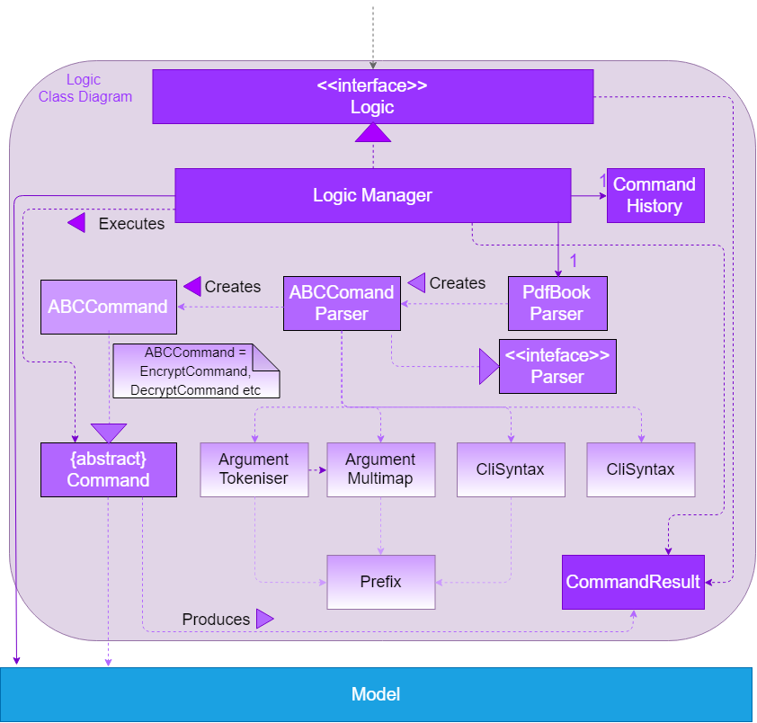

After studying this code and completing the corresponding exercises, you should be able to,
- 1. Use High-Level Designs
[LO-HighLevelDesign] - 2. Use Event-Driven Programming
[LO-EventDriven] - 3. Use API Design
[LO-ApiDesign] - 4. Use Assertions
[LO-Assertions] - 5. Use Logging
[LO-Logging] - 6. Use Defensive Coding
[LO-DefensiveCoding] - 7. Use Build Automation
[LO-BuildAutomation] - 8. Use Continuous Integration
[LO-ContinuousIntegration] - 9. Use Code Coverage
[LO-CodeCoverage] - 10. Apply Test Case Design Heuristics
[LO-TestCaseDesignHeuristics] - 11. Write Integration Tests
[LO-IntegrationTests] - 12. Write System Tests
[LO-SystemTesting] - 13. Automate GUI Testing
[LO-AutomateGuiTesting] - 14. Apply Design Patterns
[LO-DesignPatterns] - 15. Use Static Analysis
[LO-StaticAnalysis] - 16. Do Code Reviews
[LO-CodeReview]
1. Use High-Level Designs [LO-HighLevelDesign]
Note how the Developer Guide describes the high-level design using an Architecture Diagrams and high-level sequence diagrams.
Resources
2. Use Event-Driven Programming [LO-EventDriven]
The JavaFX framework, which this code base uses for its UI, uses events to communicate user input (such as mouse movement and button presses) to interested event consumers. The JavaFX event loop acts as an event dispatcher to transmit events to event consumers.
Resources
3. Use API Design [LO-ApiDesign]
Note how components of PDF++ have well-defined APIs. For example, the API of the Logic component is given in the Logic.java

Resources
4. Use Assertions [LO-Assertions]
Note how the PDF++ app uses Java asserts to verify assumptions.
Resources
Exercise: Add more assertions
-
Make sure assertions are enabled in your IDE by forcing an assertion failure (e.g. add
assert false;somewhere in the code and run the code to ensure the runtime reports an assertion failure). -
Add more assertions to PDF++ as you see fit.
5. Use Logging [LO-Logging]
Resources
Exercise: Add more logging
Add more logging to PDF++ as you see fit.
6. Use Defensive Coding [LO-DefensiveCoding]
Note how PDF++ uses the ReadOnly* interfaces to prevent objects being modified by clients who are not supposed to modify them.
Resources
Exercise: identify more places for defensive coding
Analyze the PDF++ code/design to identify,
-
where defensive coding is used
-
where the code can be more defensive
7. Use Build Automation [LO-BuildAutomation]
Resources
Exercise: Use gradle to run tasks
-
Use gradle to do these tasks: Run all tests in headless mode, build the jar file.
Exercise: Use gradle to manage dependencies
-
Note how the build script
build.gradlefile manages third party dependencies such as Jackson. Update that file to manage a third-party library dependency.
8. Use Continuous Integration [LO-ContinuousIntegration]

Resources
Exercise: Use Travis in your own project
-
Set up Travis to perform CI on your own fork.
9. Use Code Coverage [LO-CodeCoverage]
Note how our CI server Travis uses Coveralls to report code coverage. ( ) After setting up Coveralls for your project, you can visit Coveralls website to find details about the coverage of code pushed to your repo. Here is an example.
) After setting up Coveralls for your project, you can visit Coveralls website to find details about the coverage of code pushed to your repo. Here is an example.
Resources
Exercise: Use the IDE to measure coverage locally
-
Use the IDE to measure code coverage of your tests.
10. Apply Test Case Design Heuristics [LO-TestCaseDesignHeuristics]
The StringUtilTest.java
class gives some examples of how to use Equivalence Partitions, Boundary Value Analysis, and Test Input Combination Heuristics to improve the efficiency and effectiveness of test cases testing the StringUtil.java class.
Resources
Exercise: Apply Test Case Design Heuristics to other places
-
Use the test case design heuristics mentioned above to improve test cases in other places.
11. Write Integration Tests [LO-IntegrationTests]
Consider the StorageManagerTest.java class.
-
Test methods
prefsReadSave()andpdfBookReadSave()are integration tests. Note how they simply test if TheStorageManagerclass is correctly wired to its dependencies. -
Test method
handlePDFBookChangedEvent_exceptionThrown_eventRaised()is a unit test because it uses dependency injection to isolate the SUTStorageManager#handlePDFBookChangedEvent(…)from its dependencies.
Compare the above with LogicManagerTest. Some of the tests in that class (e.g. execute_* methods) are neither integration nor unit tests. They are integration + unit tests because they not only check if the LogicManager is correctly wired to its dependencies, but also checks the working of its dependencies. For example, the following two lines test the LogicManager but also the Parser.
@Test
public void execute_invalidCommandFormat_throwsParseException() {
...
assertParseException(invalidCommand, MESSAGE_UNKNOWN_COMMAND);
assertHistoryCorrect(invalidCommand);
}Resources
Exercise: Write unit and integration tests for the same method.
-
Write a unit test for a high-level method somewhere in the code base (or a new method you wrote).
-
Write an integration test for the same method.
12. Write System Tests [LO-SystemTesting]
Note how tests below src/test/java/systemtests package (e.g AddCommandSystemTest.java) are system tests because they test the entire system end-to-end.
Resources
Exercise: Write more system tests
-
Write system tests for the new features you add.
13. Automate GUI Testing [LO-AutomateGuiTesting]
Note how this project uses TextFX library to automate GUI testing, including headless GUI testing.
Exercise: Write more automated GUI tests
-
Covered by
[LO-SystemTesting]
14. Apply Design Patterns [LO-DesignPatterns]
Here are some example design patterns used in the code base.
-
Singleton Pattern :
EventsCenter.javais Singleton class. Its single instance can be accessed using theEventsCenter.getInstance()method. -
Facade Pattern :
StorageManager.javais not only shielding the internals of the Storage component from outsiders, it is mostly redirecting method calls to its internal components (i.e. minimal logic in the class itself). Therefore,StorageManagercan be considered a Facade class. -
Command Pattern : The
Command.javaand its sub classes implement the Command Pattern. -
Observer Pattern: The code base uses JavaFX’s
ObservableValueinterface to allow objects to watch for changes in data. This interface is an implementation of the Observer pattern. Objects that are interested in changes to anObservableValuecan register a listener viaObservableValue#addListener(…). When the value represented by theObservableValuechanges, it will notify all registered listeners. -
MVC Pattern :
-
The 'View' part of the application is mostly in the
.fxmlfiles in thesrc/main/resources/viewfolder. -
Modelcomponent contains the 'Model'. However, note that it is possible to view theLogicas the model because it hides theModelbehind it and the view has to go through theLogicto access theModel. -
Sub classes of
UiPart(e.g.PersonListPanel) act as 'Controllers', each controlling some part of the UI and communicating with the 'Model' (via theLogiccomponent which sits between the 'Controller' and the 'Model').
-
-
Abstraction Occurrence Pattern : Not currently used in the app.
Resources
Exercise: Discover other possible applications of the patterns
-
Find other possible applications of the patterns to improve the current design. e.g. where else in the design can you apply the Singleton pattern?
-
Discuss pros and cons of applying the pattern in each of the situations you found in the previous step.
Exercise: Find more applicable patterns
-
Learn other Gang of Four Design patterns to see if they are applicable to the app.
15. Use Static Analysis [LO-StaticAnalysis]
Note how this project uses the CheckStyle static analysis tool to confirm compliance with the coding standard.
Resources
Exercise: Use CheckStyle locally to check style compliance
-
Install the CheckStyle plugin for your IDE and use it to check compliance of your code with our style rules (given in
/config/checkstyle/checkstyle.xml).